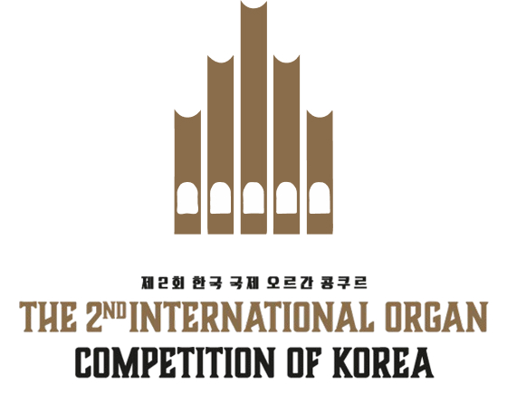
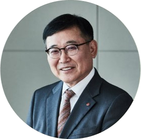
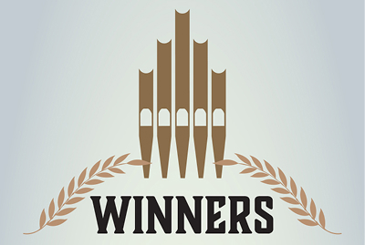
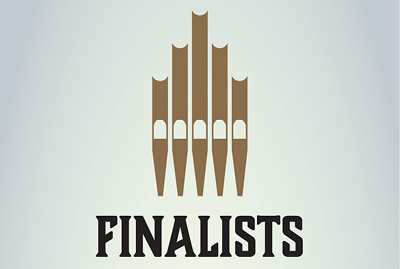
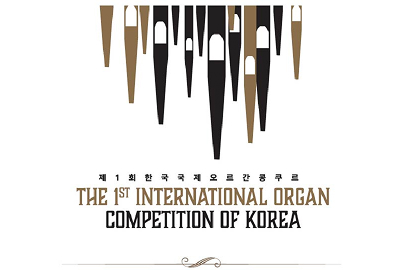

- home
- arrow_forward_ios
- 롯데콘서트홀
- arrow_forward_ios
- 국제 오르간 콩쿠르
국제 오르간 콩쿠르
International Organ Competition of Korea

ABOUT US

- 안녕하십니까 롯데문화재단 대표 김선광입니다.
- 롯데문화재단은 2016년 8월 롯데콘서트를 개관을 통해 관객들에게 특별한 감동과 기쁨을 선사해왔습니다. 더불어 다양한 음악 인재 발굴 및 교육에도 최선을 다하여 국내 클래식 음악의 장을 넓히며 다양한 지원을 확대해 나가고 있습니다.
- 롯데콘서트홀은 국내 최초로 파이프 오르간이 설치된 클래식 전용 콘서트 개관 초부터 클래식 팬은 물론 일반인들에게까지 주목을 받아왔습니다. 대형 파이프 오르간은 그간 국내에서는 쉽게 들을 수 없었던 다양한 파이프 오르간 곡을 감상할 수 있게 함으로써 국내 음악계를 다변화했다는 평가를 받고 있습니다. 롯데콘서트홀은 한국 클래식 연주자들의 국제적인 실력과 명성에 걸맞은 국제 오르간 콩쿠르 개최를 통해 한국 클래식 음악의 위상을 대내외적으로 제고하고자 합니다.
- 특히 그간 국내의 실력 있는 젊은 오르간 연주자들이 수상 및 연주 기회를 얻기 위해 해외 콩쿠르에 참여하여, 개인의 영광과 더불어 한국 음악의 위상을 높이고 있습니다. 이제 ‘한국 국제 오르간 콩쿠르’를 통해 한국의 오르간 음악 수준을 한 단계 더 발전시킴은 물론, 콩쿠르를 바탕으로 더욱 많은 음악 인재들이 더욱 기량 있는 연주자로 성장하기를 기대합니다.
- 이 자리를 빛내 줄 한국 오르간 음악의 발전을 위해 헌신하신 이번 콩쿠르의 심사위원장인 오자경 교수님을 비롯, 공정한 심사를 위해 애써 주시는 심사위원들께도 감사드립니다.
-
롯데문화재단 대표
김 선 광
- 한국 국제 오르간 콩쿠르에 오신 여러분 모두를 환영합니다.
- 이번에 한국에서 개최되는 국제오르간콩쿠르를 진행하게 됨을 매우 기쁘게 생각하며 이를 통해 오르간 음악을 일반 대중에게 더 널리 알리고 재능 있는 젊은 오르가니스트들을 격려하고 발굴하고자 합니다.
- 본 콩쿠르에서는 서울에서도 매우 특별한 두 오르간을 여러분께 자랑스럽게 소개합니다. 롯데콘서트홀에 뛰어난 음향 덕분에 한층 더 풍요로워진 리거 오르간은 세계 유명 콘서트홀에 설치되어 그 명성을 자랑하는 악기입니다. 반면 슈니트거의 역사적인 방식을 따라 제작된 한국예술종합학교 GOArt 오르간은 여러분을 원래대로의 바로크 오르간 소리로 안내할것입니다.
- 콩쿠르와 함께 계획중인 여러 부대 행사(Competition Fringe)를 통해 저명한 심사위원들이 베푸는 마스터클래스와 강의를 참관할 수 있습니다.
- 이번 행사를 기획 및 주최해 주신 롯데문화재단과 함께 동참해 주신 관계자 및 심사위원들 및 모든분들께 감사드리며 앞으로 더욱 무한한 매력을 선사하는 오르간 페스티벌 발전하기를 기원합니다.
-
한국국제오르간콩쿠르 심사위원장
한국예술종합학교 교수
오 자 경
RESULT
- 
- 중요2023 제2회 한국국제오르간콩쿠르 수상자 발표
- 2023.09.27
- 
- 중요2023 제2회 한국국제오르간콩쿠르 결선 진출자 발표
- 2023.09.25
- 
- 공지2023 제2회 한국국제오르간콩쿠르 본선 진출자 발표
- 2023.09.27
- 공지2021 제1회 IOCK 본선 진출자 발표
- 2020.06.30